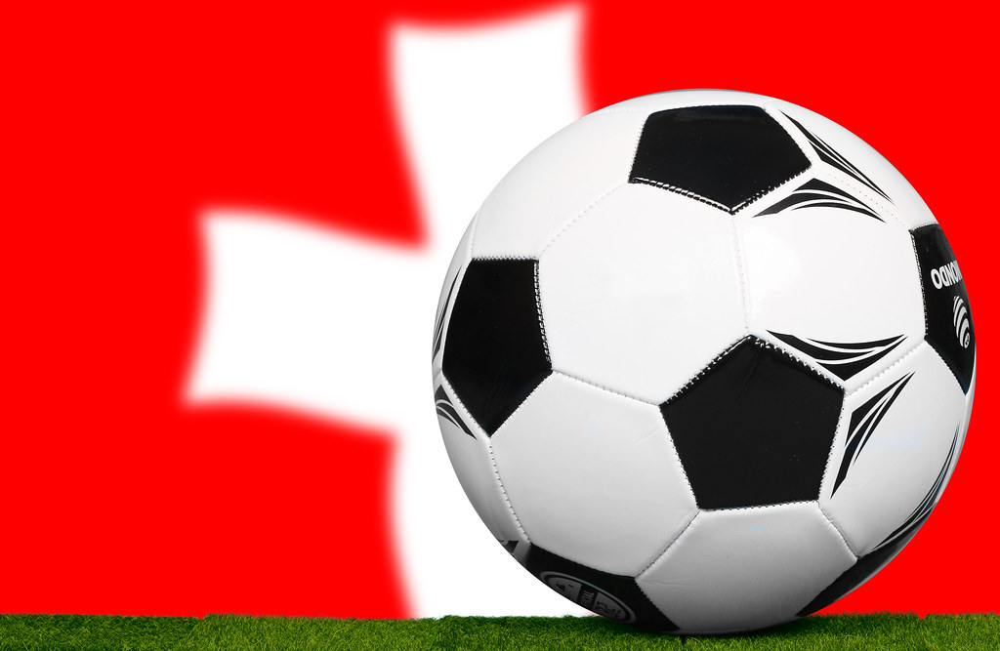
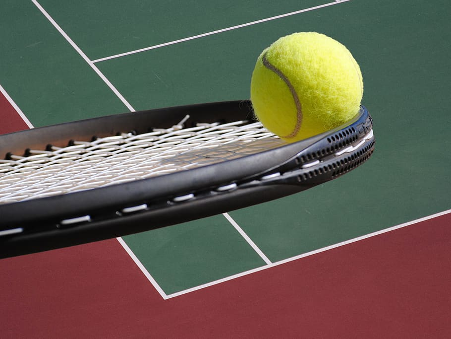
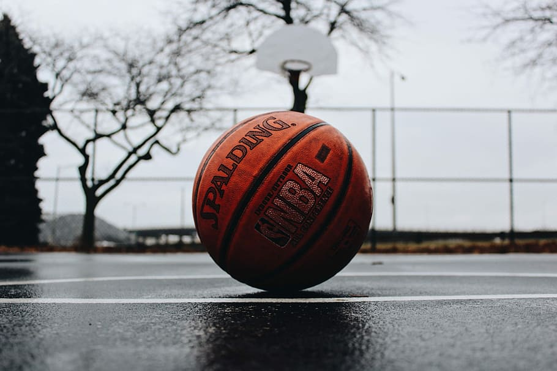

Football
Football is my favorite sport because of the excitement and passion it brings. I love watching my favorite teams play and cheering them on. Some of my favorite football teams are Manchester United, Barcelona, and Real Madrid.
Tennis
Tennis is another sport that I enjoy playing and watching. It requires a lot of skill and focus, and it's always exciting to see a close match. Some of my favorite tennis players are Roger Federer, Rafael Nadal, and Novak Djokovic.
Basketball
Basketball is a sport that I love to play and watch. I enjoy the fast-paced nature of the game and the athleticism of the players. Some of my favorite basketball players are LeBron James, Steph Curry, and Kobe Bryant.
